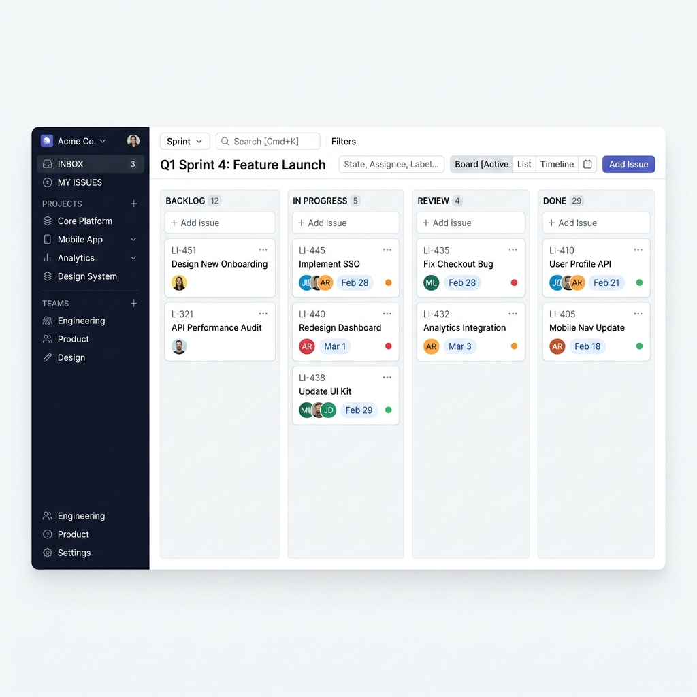

01
Project Management
บริหารโครงการแบบ Agile & Waterfall
วางแผน ติดตาม และส่งมอบงานด้วยเครื่องมือที่ทีมใช้จริง พร้อม Workspace เฉพาะบทบาท PM / BA / SA / Expert

- Backlog · Sprint · Board · Timesheet
- Task hierarchy & worklog
- Role workspace จากงานจริง